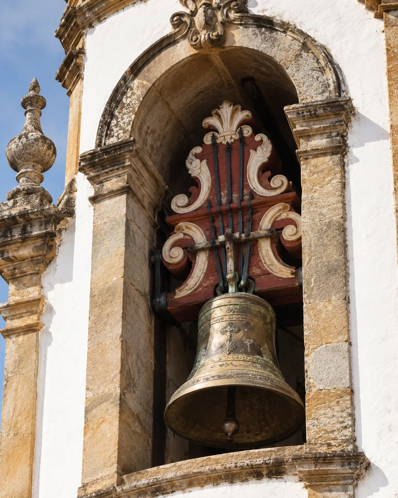

Ouça
Reproduza os toques tradicionais e acompanhe o áudio diretamente em cada card.
Ouça os toques tradicionais, conheça seus significados e explore uma das expressões culturais mais marcantes da história de São João del-Rei.

Clique em um card para ouvir o áudio e conhecer o significado.
Mais do que marcar as horas, os sinos comunicam luto, festa, celebrações e momentos importantes da vida religiosa e social. Cada toque possui um ritmo e uma intenção.
Reproduza os toques tradicionais e acompanhe o áudio diretamente em cada card.
Clique na nuvem de leitura para abrir a explicação completa de cada toque.
Teste seus conhecimentos no quiz e tente identificar a mensagem de cada toque.
Ouça o áudio, avance ou volte na barra do player e abra a nuvem para ler a explicação completa.
Ouça sem ver o nome e escolha a alternativa que melhor representa o significado do som.
Qual mensagem esse toque representa?